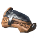
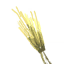
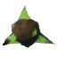

Fisk och övrigt
Fisk och övrigt i Valheim – 33 föremål med biom, fyndplats, verktyg som krävs, recept och användning.
Inget föremål hittades.
 Abborre
Abborre
En god vitköttsfisk.
Så får du det
- Fiske: Äng, Svarta Skogen, Slätt · Bete: Fiskbete
Används till
- Ingrediens i: Fiskarhatt, Mjödbas: Vananidir, Rå fisk
 Askgamsägg
Askgamsägg
Varm att vidröra och full av protein.
Så får du det
- Släpps av: Askgam · Askland · 1–2 × · 50 % chans
- Plocka upp: Gambo
Används till
- Ingrediens i: Obakad rostad skorppaj

AsksvinssadelAsksvin har ganska knöliga ryggar, så om du vill rida ett in i strid bör du nog sadla det först.
Så får du det
- Tillverka: Svart smedja (nivå 2) av 6 ×
 Eldmetall, 20 ×
Eldmetall, 20 ×  Linnetråd, 4 ×
Linnetråd, 4 ×  Morgen Sena
Morgen Sena
 Barberarkit
Barberarkit
En uppsättning verktyg för vassa barberare.
Så får du det
- Köp: Hildir · 600 mynt
Används till
- Byggmaterial till: Barberarstation
 Blåsfisk
Blåsfisk
God när den tillagats rätt, men smaken har sting.
Så får du det
- Fiske: Dimmornas Dal, Hav · Bete: Dimmigt fiskbete
Används till
- Ingrediens i: Fiskarhatt, Rå fisk
 Draktår
Draktår
De sista frusna tårarna från en drake, pulserande med mystisk energi.
Så får du det
- Släpps av: Moder · Berg · 10 ×
Används till
- Byggmaterial till: Hantverkarbord
 Drakägg
Drakägg
Mycket tyngre än det ser ut. Ett svagt, spinnande läte hörs från insidan.
Så får du det
- Plocka upp: Drakbo (ägg)
 Gädda
Gädda
En sötvattenfisk som måste kryddas ordentligt.
Så får du det
- Fiske: Äng, Svarta Skogen, Slätt · Bete: Fiskbete
Används till
- Ingrediens i: Fiskarhatt, Rå fisk
 Havsabborre
Havsabborre
Serveras bäst med mycket kolhydrater!
Så får du det
- Fiske: Slätt · Bete: Bitskt fiskbete
Används till
- Ingrediens i: Fiskarhatt, Mjödbas: Anti-stick, Rå fisk
 Hildirs mässingskista
Hildirs mässingskista
Hildirs egendom, återlämnas vänligen vid förlust.
Så får du det
- Släpps av: Brenna · Svarta Skogen
 Hildirs silverkista
Hildirs silverkista
Hildirs egendom, återlämnas vänligen vid förlust.
Så får du det
- Släpps av: Geirrhafa · Berg
 Intricate Key
Intricate Key
If there's a key, then surely there must be a lock.
Så får du det
- Släpps av: Hexen · Äng, Svarta Skogen, Träsk, Berg, Slätt, Dimmornas Dal, Askland, Djupaste Norden, Hav · 10 % chans
- Tillaga: Frost Foundry av
 Cast: Intricate Key
Cast: Intricate Key
 Jätteströmming
Jätteströmming
Fermenterad kommer den här fisken lukta värre än träsket den kom från.
Så får du det
- Fiske: Träsk · Bete: Klibbigt fiskbete
Används till
- Ingrediens i: Fiskarhatt, Rå fisk
 Klocka
Klocka
För vem ringer klockan?
Så får du det
- Tillverka: Svart smedja av 3 ×
 Klockskärva
Klockskärva
Används till
- Frammanar bossen: Fader (3 ×)
 Koralltorsk
Koralltorsk
Den har sett saker... Hemska saker...
Så får du det
- Fiske: Hav · Bete: Tungt fiskbete
Används till
- Ingrediens i: Fiskarhatt, Rå fisk
 Kornmjöl
Kornmjöl
Bra att baka bröd med.
Så får du det
- Bearbeta: Väderkvarn av

Korn
Används till
- Ingrediens i: Blodpudding, Bröddeg, Fiskknyten, Obakad oxödlepaj, Obakad pikant paj, Obakad rostad skorppaj, Unbaked Sweetbread
 Kung Fuls statyett
Kung Fuls statyett
Innehåller en del av Storkung Yagluths väldiga kraft.
Så får du det
- Släpps av: Fulingkämpe · Slätt · 10 % chans
- Kistor: Stonehenge · 8,1 % chans
- Plocka upp: Stentorn (Berg), Fuling-by
Används till
- Frammanar bossen: Yagluth (3 ×)
 Liehandtag
Liehandtag
En ordentlig verktygsbas.
Så får du det
- Köp: Myrhäxan · 200 mynt · när du har besegrat Moder
Används till
- Ingrediens i: Lie
 Magmafisk
Magmafisk
Somliga säger att den här fisken lägger sin rom i flytande lava!
Så får du det
- Fiske: Askland · Bete: Hett fiskbete
Används till
- Ingrediens i: Fiskarhatt, Rå fisk
 Marulk
Marulk
Det dinglande ljuset gör det lättare att se det näpna lilla ansiktet!
Så får du det
- Fiske: Dimmornas Dal · Bete: Dimmigt fiskbete
Används till
- Ingrediens i: Ej tillrett fiskkalas, Fiskarhatt, Rå fisk
 Moose Saddle
Moose Saddle
A moose is a noble creature, but with a saddle this fine it might just allow a rider.
Så får du det
- Tillverka: Svart smedja (nivå 2) av 4 ×
 Bloodgold, 5 ×
Bloodgold, 5 ×  Seal Pelt, 5 ×
Seal Pelt, 5 ×  Timberwood, 15 × Linnetråd
Timberwood, 15 × Linnetråd
 Nordisk lax
Nordisk lax
Den här fisken tycker om när vattnet är nästintill fruset.
Så får du det
- Fiske: Djupaste Norden · Bete: Frostigt fiskbete
Används till
- Ingrediens i: Fiskarhatt, Rå fisk
 Oat Flour
Oat Flour
Finely ground oats, with plenty of potential.
Så får du det
- Bearbeta: Väderkvarn av
 Oats
Oats
Används till
- Ingrediens i: Meat In Bread, Northern Morning Fare, Oven Pancake Batter, Pancakes, Unbaked Poteitr
 Oxödlesadel
Oxödlesadel
Använd på en Oxödla för att rida den.
Så får du det
- Tillverka: Arbetsbänk av 10 ×
 Läderlappar, 20 × Linnetråd, 15 ×
Läderlappar, 20 × Linnetråd, 15 ×  Svartmetall
Svartmetall
 Plågad ande
Plågad ande
Storkung Yagluths kvarlevor -- en förvriden ande sliten mellan denna värld och nästa.
Så får du det
- Släpps av: Yagluth · Slätt · 3 ×
Används till
- Byggmaterial till: Irrblossfontän
 Sigillbrytare
Sigillbrytare
Ett föremål som kan bryta ett Dvärgskt sigill.
Så får du det
- Tillverka: Galderbord av 9 ×
 Sigillbrytarfragment
Sigillbrytarfragment
 Tetra
Tetra
Med hela sitt liv i mörker har den inget behov av ögon.
Så får du det
- Fiske: Berg · Hildir-uppdrag: Ylande grotta, Frostgrotta · Bete: Kallt fiskbete
Används till
- Ingrediens i: Fiskarhatt, Rå fisk
 Tonfisk
Tonfisk
Havets kyckling...
Så får du det
- Fiske: Hav · Bete: Tungt fiskbete
Används till
- Ingrediens i: Fiskarhatt, Rå fisk
 Trollfisk
Trollfisk
Den här fisken är en plåga i traktens fiskevatten.
Så får du det
- Fiske: Svarta Skogen · Bete: Mossigt fiskbete
Används till
- Ingrediens i: Fiskarhatt, Mjödbas: Uttrollighet, Rå fisk
 Träsknyckel
Träsknyckel
Delvis täckt av torkad jord. Den har en unken stank.
Så får du det
- Släpps av: Den Uråldrige · Svarta Skogen
 Tunnband
Tunnband
Metallringen är rund och redo att hålla en tunna samman. Saknas bara trä!
Så får du det
- Köp: Haldor · 100 mynt (× 3)
Används till
- Byggmaterial till: Tunna

Uråldrigt fröOm du håller det mot ditt öra så kan du höra tysta viskningar...
Så får du det
- Släpps av: Grådvärgskämpe · Svarta Skogen · 33 % chans
- Slå sönder: Grådvärgsbo
Används till
- Ingrediens i: Heart of the Forest
- Frammanar bossen: Den Uråldrige (3 ×)
 Ägg
Ägg
Håll det varmt för att se vad som kommer ut. Vad kom först, egentligen?
Så får du det
- Köp: Haldor · 1 500 mynt · när du har besegrat Yagluth
- Kistor: Hildir-uppdrag: Förseglat torn · 55 % chans
Används till
- Ingrediens i: Pancakes, Stekt ägg, Svampomelett, Unbaked Sweetbread